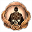
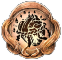
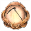
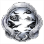

Base Game Achievements
| Achievement | Description | |||||||||||||||||||||||||||||||||||||||||||||||||||||||||||||||||||||||||||||||||||||||
|---|---|---|---|---|---|---|---|---|---|---|---|---|---|---|---|---|---|---|---|---|---|---|---|---|---|---|---|---|---|---|---|---|---|---|---|---|---|---|---|---|---|---|---|---|---|---|---|---|---|---|---|---|---|---|---|---|---|---|---|---|---|---|---|---|---|---|---|---|---|---|---|---|---|---|---|---|---|---|---|---|---|---|---|---|---|---|---|---|
You are Nioh 
|
[Platinum Trophy] You have unlocked all Achievements! | |||||||||||||||||||||||||||||||||||||||||||||||||||||||||||||||||||||||||||||||||||||||
|
Dawn of a Dream |
Befriended Tokichiro. Complete the Main Mission The Village of Cursed Blossoms. | |||||||||||||||||||||||||||||||||||||||||||||||||||||||||||||||||||||||||||||||||||||||
|
An Electrifying Triumph |
Defeated Imagawa Yoshimoto, and was made a Samurai. Complete the Main Mission The Hiden Monsters of Okehazama. | |||||||||||||||||||||||||||||||||||||||||||||||||||||||||||||||||||||||||||||||||||||||
|
Hideyoshi |
Decided to share a name with Tokichiro. Complete the Soaring Region (2nd region) and move onto the Shadow Region (3rd region). | |||||||||||||||||||||||||||||||||||||||||||||||||||||||||||||||||||||||||||||||||||||||
|
The Paths We Tread |
Parted ways with Tokichiro. Completed the Main Mission The Sun Sets on Mount Tenno. | |||||||||||||||||||||||||||||||||||||||||||||||||||||||||||||||||||||||||||||||||||||||
|
Dream's Toll  |
Defeated Tokichiro. Completed the Main Mission The Two Faces of Hospitality. | |||||||||||||||||||||||||||||||||||||||||||||||||||||||||||||||||||||||||||||||||||||||
Mother and Child 
|
Reunited with your mother in the Interim. Completed the Main Mission The High-Spirited Demon. | |||||||||||||||||||||||||||||||||||||||||||||||||||||||||||||||||||||||||||||||||||||||
|
What is Written |
Fulfilled your ultimate destiny. Completed the Main Mission Sealed Fate. | |||||||||||||||||||||||||||||||||||||||||||||||||||||||||||||||||||||||||||||||||||||||
|
Dream Within a Dream |
Saw Tokichiro off on his final departure. Completed the Main Mission In the Eye of the Beholder. | |||||||||||||||||||||||||||||||||||||||||||||||||||||||||||||||||||||||||||||||||||||||
|
Bold Wrangler |
Defeated Gozuki in the mission: The Village of Cursed Blossoms. | |||||||||||||||||||||||||||||||||||||||||||||||||||||||||||||||||||||||||||||||||||||||
Grazer Eraser 
|
Defeated both Gozuki and Mezuki in a single mission. Can be done in the following missions: The Village of Cursed Blossoms and The Refined Man of the Underworld. | |||||||||||||||||||||||||||||||||||||||||||||||||||||||||||||||||||||||||||||||||||||||
Devout Believer 
|
Defeated the boss of The Viper's Sanctum without breaking the statue of Shirohami. (DO NOT break any of the Snake Statues!) | |||||||||||||||||||||||||||||||||||||||||||||||||||||||||||||||||||||||||||||||||||||||
Feather Buster 
|
In the main mission A Way Out there are 2 regions with searchlights, getting spotted by the searchlight will spawn in a Red Orb nearby. Destroying the Red Orb will get rid of the spotlight. Destroying both Red Orbs in the level will unlock the achievement. You can view the guide here. | |||||||||||||||||||||||||||||||||||||||||||||||||||||||||||||||||||||||||||||||||||||||
Schemer 
|
Got Gyuki to attack the dam in the main mission Prevading Waters. You can view the guide here. | |||||||||||||||||||||||||||||||||||||||||||||||||||||||||||||||||||||||||||||||||||||||
Hidden Hopes 
|
Encountered all of the Usura-Hicho in the main mission The Frenzied Blaze. Interact with 3 swarms of frozen butterflies. You can view the guide here. | |||||||||||||||||||||||||||||||||||||||||||||||||||||||||||||||||||||||||||||||||||||||
Peal of Ten Thousand Bells 
|
Ring all of the bells in the main mission Ruin Draws Near. You can view the guide here. | |||||||||||||||||||||||||||||||||||||||||||||||||||||||||||||||||||||||||||||||||||||||
Clean Sweep 
|
Destroyed every Amrita shard in the main mission The High-Spirited Demon. You can view the guide here. | |||||||||||||||||||||||||||||||||||||||||||||||||||||||||||||||||||||||||||||||||||||||
|
Seven Wonders |
Defeated each of the Seven Spears in the main mission Cherry Blossom Viewing in Daigo. You can view the guide here. | |||||||||||||||||||||||||||||||||||||||||||||||||||||||||||||||||||||||||||||||||||||||
|
Core Score  |
Obtained your first Soul Core. | |||||||||||||||||||||||||||||||||||||||||||||||||||||||||||||||||||||||||||||||||||||||
Spa Healer 
|
Bathed in the first hot spring. | |||||||||||||||||||||||||||||||||||||||||||||||||||||||||||||||||||||||||||||||||||||||
The Beginning of a Samurai 
|
Reached level 10. | |||||||||||||||||||||||||||||||||||||||||||||||||||||||||||||||||||||||||||||||||||||||
|
Full-Fledged Samurai |
Reached level 100. | |||||||||||||||||||||||||||||||||||||||||||||||||||||||||||||||||||||||||||||||||||||||
|
Sudama Swapper |
Exchanged gifts with a Sudama for the first time. | |||||||||||||||||||||||||||||||||||||||||||||||||||||||||||||||||||||||||||||||||||||||
Trinket Triumph 
|
Used the Kodama Bazaar. Shrine ⟶ Make Offering ⟶ Kodama Bazaar. | |||||||||||||||||||||||||||||||||||||||||||||||||||||||||||||||||||||||||||||||||||||||
A Weapon's Mind 
|
Listened to the innermost thoughts of a Yokai Weapon. Get a Yokai Weapon to 999 familiarty, and reach max Sentience. Perform this 5 times to unlock the achievement. | |||||||||||||||||||||||||||||||||||||||||||||||||||||||||||||||||||||||||||||||||||||||
Help Wanted 
|
Summoned an Acolyte from a Benevolent Grave 10 times. | |||||||||||||||||||||||||||||||||||||||||||||||||||||||||||||||||||||||||||||||||||||||
|
Lover of Letters |
Displayed a calligraphy scroll in your hut. | |||||||||||||||||||||||||||||||||||||||||||||||||||||||||||||||||||||||||||||||||||||||
|
Friend of Guardians |
Collected all Guardian Spirits. There are a total of 37 Guardian Spirits. | |||||||||||||||||||||||||||||||||||||||||||||||||||||||||||||||||||||||||||||||||||||||
|
Burst Breaker |
Used the Brute, Feral, and Phantim Burst Counters five times each to counter a Burst Attack. | |||||||||||||||||||||||||||||||||||||||||||||||||||||||||||||||||||||||||||||||||||||||
|
Latest Masterpiece |
Forged an item. Go to Starting Point ⟶ Blacksmith ⟶ Forge ⟶ Forge a any new weapon or item. | |||||||||||||||||||||||||||||||||||||||||||||||||||||||||||||||||||||||||||||||||||||||
|
Match Made in Heaven |
Performed a Soul Match. You can perform a Soul Match by fusing together 2 of the same type of Soul Cores. | |||||||||||||||||||||||||||||||||||||||||||||||||||||||||||||||||||||||||||||||||||||||
|
Friend to the Kodama |
Obtained a Kodama's Soul Core. Find a Sudama and trade a Soul Core with it. The Soul Core MUST be a purified Soul Core! You must rest at a shrine to purify the Soul Cores before trading those Soul Core with the Sudama. | |||||||||||||||||||||||||||||||||||||||||||||||||||||||||||||||||||||||||||||||||||||||
|
Remodeling Novice |
Remodeled a piece of equipment. After finishing the story on NG Dream of the Strong (NG+) will unlock
along with Divine Gear. You can remodel Divine gear by going to Starting Point ⟶ Blacksmith ⟶
Remodel. To unlock the Remodel option the player must complete the mission: The Roaming Artisan in the Dream Region. |
|||||||||||||||||||||||||||||||||||||||||||||||||||||||||||||||||||||||||||||||||||||||
|
Twilight Walker |
Completed your first Twilight Mission. The Main Mission version of a Twilight Mission must be completed before the Twilight Mission will unlock. | |||||||||||||||||||||||||||||||||||||||||||||||||||||||||||||||||||||||||||||||||||||||
|
Teamwork |
Completed 10 missions with NPCs or as Expeditions with other users. (Does not include Acolytes.) | |||||||||||||||||||||||||||||||||||||||||||||||||||||||||||||||||||||||||||||||||||||||
|
Seasoned Traveler |
Discovered 10 hidden items on the map. There are a total of 35 hidden items, 5 in each region. This achievement only requires 10. Move the cursor around until it turns from blue to red, then press X / A. | |||||||||||||||||||||||||||||||||||||||||||||||||||||||||||||||||||||||||||||||||||||||
|
Yokai Quelling Master |
Defeated all types of Yokai. There are 34 small Yokai and 15 Large Yokai. All of the large Yokai are
bosses and are un-missable. You can check your progress by going to Titles ⟶ Gameplay Records
⟶ Small Yokai Defeated. Small Yokai1.Gaki 2.Yoki 3.Enki 4.Ippon-Datara 5.Kappa 6.Red Kappa 7.Dweller 8.Nurikabe 9.Oni-Bi 10.Skeleton Warrior 11.Yamanba 12.Waira 13.Mitsune Yazura 14.Nure-Onna 15.Toxic Slime 16.Aberran Soldier 17.Karakasa Umbrella 18.Magatsu Warrior 19.Biwa Boku-boku 20.Mujina 21.One-Eyed Imp 22.One-Eyed Oni 23.Onryudo 24.Wheelmonk 25.Flying Bolt 26.Karasu Tengu 27.Rokurokubi 28.Snowclops 29.Koroka 30.Ubume 31.Tesso 32.Lesser Umi-bozu 33.Spider 34.NamahageLarge Yokai1.Mezuki 2.Gozuki 3.Enenra 4.Yatsu-no-Kami 5.Kamaitachi 6.Onryoki 7.Tatarimokke 8.Gyuki 9.Kasha 10.Ryomen Sukuna 11.Daidara Bocchi 12.Shuten Doji 13.Lady Osakabe 14.Kashin Koji 15.Otakemaru |
|||||||||||||||||||||||||||||||||||||||||||||||||||||||||||||||||||||||||||||||||||||||
|
Fuse It or Lose It |
Fused any Soul Core until it reached rank 9. To upgrade a Soul Core go to Shrine ⟶ Manage Soul Cores ⟶ Soul Fusion ⟶ Combine multiple of the same Soul Core to increase the level until it reaches lvl 9. | |||||||||||||||||||||||||||||||||||||||||||||||||||||||||||||||||||||||||||||||||||||||
|
Sword Master |
Acquired a Mystic Art for the Sword. | |||||||||||||||||||||||||||||||||||||||||||||||||||||||||||||||||||||||||||||||||||||||
|
Dual Sword Master |
Acquired a Mystic Art for the Dual Swords. | |||||||||||||||||||||||||||||||||||||||||||||||||||||||||||||||||||||||||||||||||||||||
|
Spear Master |
Acquired a Mystic Art for the Spear. | |||||||||||||||||||||||||||||||||||||||||||||||||||||||||||||||||||||||||||||||||||||||
|
Axe Master |
Acquired a Mystic Art for the Axe. | |||||||||||||||||||||||||||||||||||||||||||||||||||||||||||||||||||||||||||||||||||||||
|
Kusarigama Master |
Acquired a Mystic Art for the Kusarigama. | |||||||||||||||||||||||||||||||||||||||||||||||||||||||||||||||||||||||||||||||||||||||
|
Odachi Master |
Acquired a Mystic Art for the Odachi. | |||||||||||||||||||||||||||||||||||||||||||||||||||||||||||||||||||||||||||||||||||||||
|
Tonfa Master |
Acquired a Mystic Art for the Tonfa. | |||||||||||||||||||||||||||||||||||||||||||||||||||||||||||||||||||||||||||||||||||||||
|
Hatchet Master |
Acquired a Mystic Art for the Hatchets. | |||||||||||||||||||||||||||||||||||||||||||||||||||||||||||||||||||||||||||||||||||||||
|
Switchglave Master  |
Acquired a Mystic Art for the Switchglave. | |||||||||||||||||||||||||||||||||||||||||||||||||||||||||||||||||||||||||||||||||||||||
|
Splitstaff Master |
Acquired a Mystic Art for the Splitstaff. | |||||||||||||||||||||||||||||||||||||||||||||||||||||||||||||||||||||||||||||||||||||||
Fist Master 
|
Acquired a Mystic Art for the Fists. | |||||||||||||||||||||||||||||||||||||||||||||||||||||||||||||||||||||||||||||||||||||||
|
Ninjutsu Master |
Acquired a Mystic Art for Ninjutsu. | |||||||||||||||||||||||||||||||||||||||||||||||||||||||||||||||||||||||||||||||||||||||
|
Onmyo Magic Master |
Acquired a Mystic Art for Onmyo Magic. | |||||||||||||||||||||||||||||||||||||||||||||||||||||||||||||||||||||||||||||||||||||||
|
Soul Searcher |
Obtained all of the Soul Cores. You can view the complete list of Soul Cores here. | |||||||||||||||||||||||||||||||||||||||||||||||||||||||||||||||||||||||||||||||||||||||
|
Let There Be Light  |
Dispelled every instance of the Dark Realm in the main missions. Below is a list of all of the Dark Realms
in Main Missions: Awakening Region:Soaring Region:Shadow Region:
Dawn Region:Twilight Region:Dream Region:Afterglow Region |
|||||||||||||||||||||||||||||||||||||||||||||||||||||||||||||||||||||||||||||||||||||||
|
Kodama Leader |
Collected all Kodama. You can view the video guide
here.
Awakening Region:
Soaring Region:
Shadow Region:
Dawn Region:
Twilight Region:
Dream Region:
|
|||||||||||||||||||||||||||||||||||||||||||||||||||||||||||||||||||||||||||||||||||||||
|
Spa Lover |
Bathed in every Hot Spring. There are a total of 27 Hot Springs in the Base Game. You can view
the video guide
here.
Awakening Region:
Soaring Region:
Shadow Region:
Dawn Region:
Twilight Mission:
Dream Region:
|
|||||||||||||||||||||||||||||||||||||||||||||||||||||||||||||||||||||||||||||||||||||||
|
Tea Connoisseur |
Appraised your Tea Utensils 50 times. You can appraise Tea Utensils by going to Starting Point ⟶ Hidden Teahouse ⟶ Appraise Tea Utensils. You can check the progress by going to Titles ⟶ Title List ⟶ Ungyo Table List ⟶ Reputable Tea Ceremony Master. The Guardian Spirit Isanagami increases Tea Utensil drop rate by 10 %. | |||||||||||||||||||||||||||||||||||||||||||||||||||||||||||||||||||||||||||||||||||||||
Dungball Roller 
|
Became Ryunojo the Dung Lover's best friend and recieved the Coiled Snake Helmet Smithing Text. You can find Ryunojo the Dung Lover in the Main Mission Bird In A Cage in the "Shadow" Region. You need to give him 30 Dungballs to obtain this achievement. Noble Dungball count as 2 normal Dungballs. You can view the video guide here. |